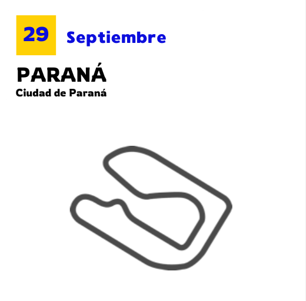
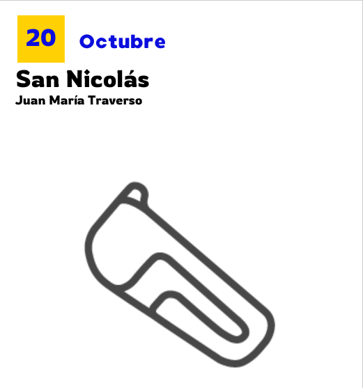
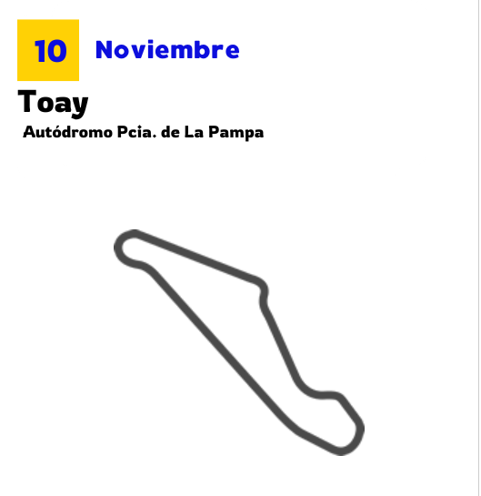
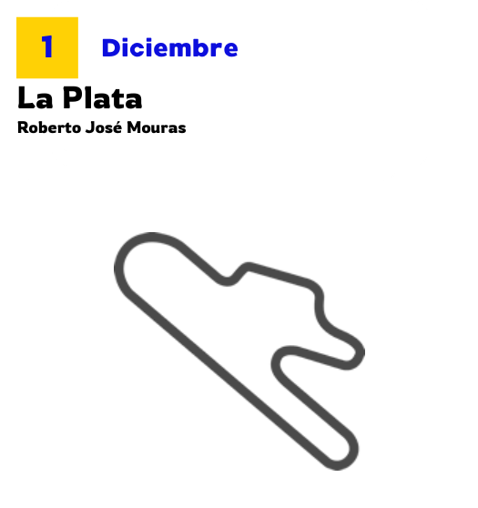
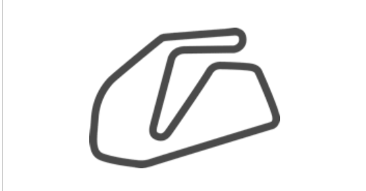
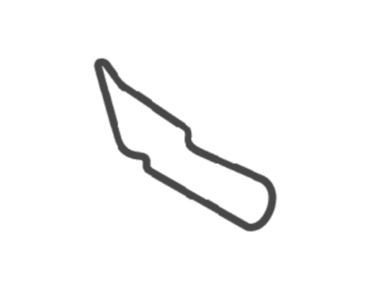
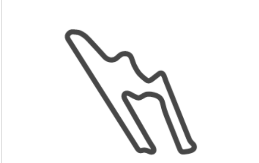
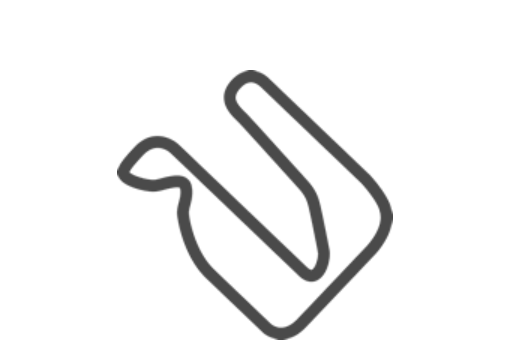
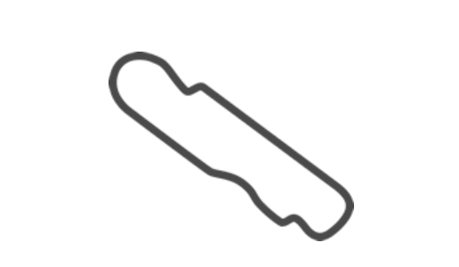

Calendario
Próximas carreras




Últimos resultados
Rosendo Hernández
RESULTADO : Excluido
Oscar y Juan Gálvez
RESULTADO : Puesto 32
San Juan Villicum
RESULTADO : Ausente
Rosamonte
RESULTADO : Puesto 17
Autódromo Ciudad de Rafaela
RESULTADO : Puesto 39